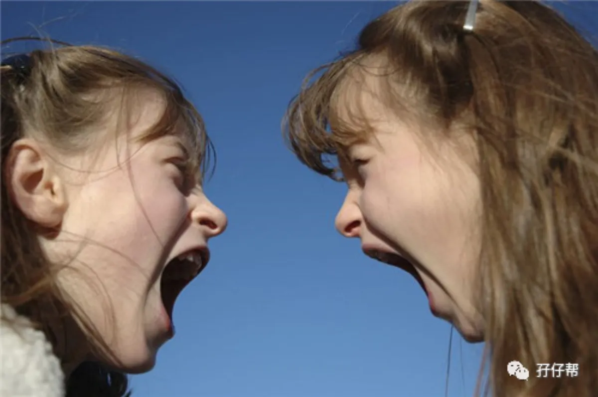
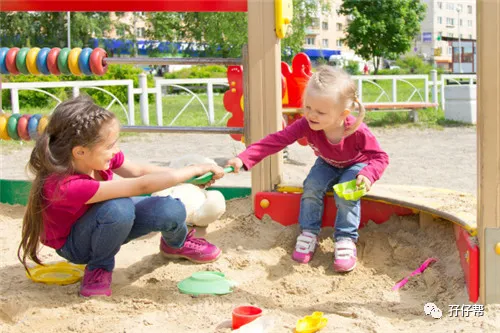
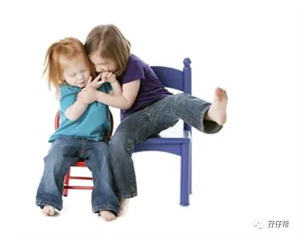
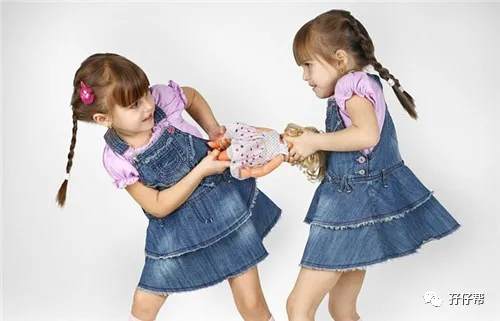
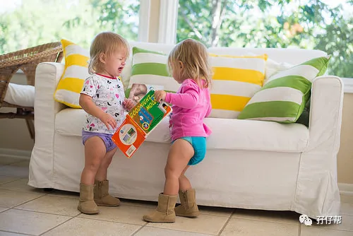
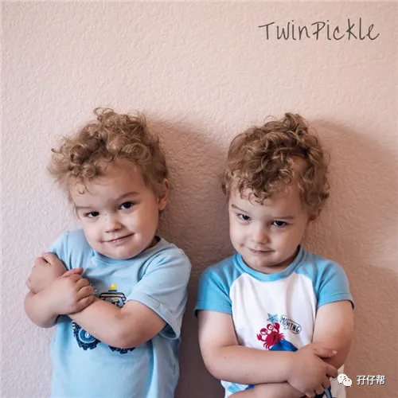
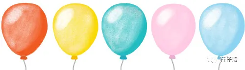
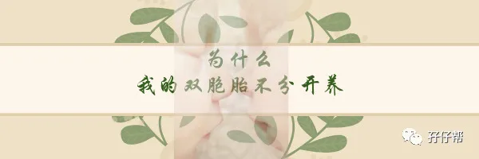

文|圆圈妈，一个文思如尿崩的双胎妈妈
图|来自网络，如有侵权，请联系删除
1
【01】
我自己不是双胞胎，面对双胞胎的教养，我总是谨言慎行，格外小心。
很担心自己一个不经意的行为就会伤害到两孩子幼小的心灵，或者是给他们带来童年的阴影。
尤其是在对待他们的日常用品上，我真的是烧坏了脑，操碎了心…
一直以来，我总是秉着一视同仁的原则，给他们买一模一样的东西，如一样的服饰，一样的玩具…
生怕稍有不同就会引起无休止的争端，或者是被他们抓到把柄，质疑我偏心。
但其实，对待双胞胎孩子绝对均等，是件很难执行的事情，有时是无意义，甚至是有害的。
很多时候，我的下场就是：为了孩子，苦了自己，关键是两孩子还未必领情。
才发现，原来为人父母者竟如此之难，作为双胞胎的父母，更是难上加难！
究竟要怎么做，才能让两孩子觉得我很公平，而我也不至于“为伊们消得人憔悴”
2
【02】
教育界魔法师阿涌叔叔在书中《玩出来的成长奇迹》》提到一个案例，对我的触动特别大。
有一对双胞胎，老大爱吃蛋糕，老二爱吃面包。有一天妈妈路过面包店想起老二爱吃，就买了，又想到老大，就买了一个一模一样的带了回去。
结果老大老二都闹了别扭，因为老大觉得自己爱吃的是蛋糕，可是妈妈并没有买蛋糕，说明妈妈不关心自己，给自己买是出于愧疚或是可怜；
而老二也不领情，因为他丝毫没有感受到妈妈是特意买了他爱吃的，而是出于习惯买了双份的面包。
这位妈妈苦恼极了，两个孩子太闹心了，一片好意反而闹出了矛盾，以后都不知道该怎么办了。
我非常理解这位妈妈的心情，因为我也是经常被圆圈哥俩误会 ，一片好心被当驴肝肺！
圆圈兄弟喜欢的玩具不一样，圆圆喜欢地铁模型，圈圈喜欢高铁模型。
而我为了不想因玩具不一样导致他们互相争抢，自己夹在中间当裁判，自作主张给他们统一买一模一样的高铁模型。
虽然他们都喜欢买回来的新玩具，可是喜欢地铁的圆圆，拿着高铁玩具，其实玩得并不尽兴！经常把玩具放一边，跑到我面前哭丧着脸念叨他的地铁玩具！
我想，假如他会表达的话，必定会对我说：“妈妈，你偏心，只给圈圈买喜欢的玩具！”
我突然觉得自己所谓的“样样统一”，其实是对其中一方最大的不公平。
3
【03】
我和那位妈妈的“吃力不讨好”，皆源于我们都陷入了“均等”的误区，认为只要对双胞胎孩子做到凡事均等就是公平的，但实际上呢？
真正的公平，不是事事追求均等，样样要求统一，而应该是动态的，是建立在孩子的能力，喜好和接受程度的基础上，根据孩子各自的性格特征分配的。
正如阿涌叔叔说的：“智慧的教育方式不是揠苗助长，而是根据他的成长规律给予相应的辅助，让他在对的道路上继续前进，成长为一个优秀的人”。
想对孩子表达爱，就要用孩子能够理解、愿意接受的方式来。
因此，在给孩子们买玩具这件事情上，要想体现我的公平公正，正确做法应该是这样的：给圈圈买高铁玩具，给圆圆买地铁玩具，那才是均等。
虽然处理方式不一样，但都是针对他们各自的喜好安排的，他们都拿到了各自心爱的玩具，皆大欢喜，这对他们来说就是公平的。
我算是搞明白了，情感这东西，要么是0，要么是100%。
即便你凡事追求一分为二，问心无愧地做到一碗水端平，也未必能够让孩子们都满意。
他们真正想要的，并不是那份公平的，平均的爱，而是全部。
这里的“全部”指的是在某个特定时间段，或者某些情况下，父母处理事情的态度给他们的感觉是“独一无二”和“完全拥有”。
比如，孩子爱吃胡萝卜，那就别老是夹红烧肉，孩子喜欢穿破洞牛仔裤，那就别老是给她穿红裙子...
从实际出发的“不均等对待”才是真正的“一视同仁”！只有这样才能让两孩子的心理更容易达到平衡的状态。
六一儿童节马上要到了，双胞胎孩子们的礼物怎么买？买两份一样的还是不一样的？若你正苦于没有答案，不妨听听孩子们的真实想法！
若孩子们还不会表达，那就自己琢磨吧，从他们不同的兴趣爱好着手，别出心裁地准备两份不一样的礼物！
讲真，买什么玩具不重要，重要的是，你给孩子们买玩具那份特别的心意，他们能感受到了吗？
两份不一样的礼物会让他们觉得礼物必定是爸爸妈妈精心挑选的，会感受到爸爸妈妈对自己的“全心全意”。
只要GET到父母对自己独一无二的爱，其他一切都可以不在乎。
4
【04】
当然，你担心的事情可能会出现：他们会对不一样的玩具互相争抢。
OK ！那就抢呗！
其实，对于双胞胎孩子而言，哪怕对方手上拿着的玩具跟自己的一样，只要玩具在对方手里，他们都想要抢过来！都觉得对方的总比自己手中的好, 不得到绝不罢休。
孩子们之间互相争抢玩具是很正常的现象，只是苦了家长们夹在中间当裁判！但其实你也可以选择不理会！
这些手足间的小争端，就让他们自己去处理吧！
只要在安全范围，你搬着椅子看好戏就对了，别的就甭管了！
因为大量的事实证明，对于气头上的孩子们，你说再多都是废话，还不如拳头来得直接，对于血浓于水的双胞胎孩子们来说，谁输谁赢都不是重点，重点是，互相抢玩具才是最好玩的！
因为是手足，因为有爱，所以才有了争，抢，打，闹…
只要有手足情，就不会在乎在那些争端和矛盾是公平还是不公平。
因此，在养育双胞胎过程中，与其一味地追求绝对平等，倒不如在孩子们遇到纷争时，教他们学会如何谦让体谅，相亲相爱…
当有一天，孩子们学会关爱身边的每一个人时，我们就会发现，所有的幸福，都不是公平能够衡量得了的。
这正好解释了，为什么双胞胎孩子喜欢窝里斗，但面对外敌时，却出奇团结，勠力同心，一致对外！
还有啥疑问吗？欢迎加入双胞胎教育群，一起探讨双胞胎孩子的非常教育！
至于双胞胎孩子适合什么玩具呢？我在之前的推文中有提到，大家可以参考以下三篇文章：
《双胞胎孩子的玩具，你挑对了吗？》
《10款适合双胞胎孩子的玩具大比拼（上集）》
《10款适合双胞胎孩子的玩具大比拼（下集）》
THE END
今日互动话题
#你给双胞胎孩子们买啥玩具啦？#
评论区聊一聊
说出你的经历吧
一好文推荐一
一加入社群一
一关注孖仔帮一
点击“阅读原文”，直达双胞胎育儿网站www.sgguy.com.
喜欢这篇文章吗？，请点“在看”







